Chain-of-Thought 提示激发大语言模型的推理能力
大模型在算术、常识与符号推理等复杂任务上，仅靠扩大模型规模和标准 few-shot prompting 仍表现不佳。论文提出 chain-of-thought prompting：将 few-shot 示例从〈input, output〉扩展为〈input, chain of thought, output〉三元组，为每个示例附上人工撰写的中间自然语言推理步骤，不做任何 finetuning 即可激发模型逐步推理。实验显示 PaLM 540B 仅用 8 个 CoT 示例就在 GSM8K 上刷新 SOTA、超过 finetuned GPT-3 with verifier，且问题越复杂增益越大；CoT 是模型规模的涌现能力，约 100B 参数以下无正收益甚至有害。对团队而言，这是提示工程与 Agent 推理设计的奠基性技术，其消融设计（equation only、variable compute only、CoT after answer）、鲁棒性验证与错误分类分析方法，可直接借鉴到团队内部提示词资产管理与评测体系建设中。
仅扩大模型规模不足以在算术、常识、符号推理等需要多步推理的任务上取得高性能；标准 few-shot prompting 在此类任务上表现差且不随规模显著提升，而已有的 rationale 增强方法依赖昂贵的标注数据集与 finetuning。论文希望用纯提示方式、在不更新任何参数的前提下激发大模型的多步推理能力。
提出 chain-of-thought prompting：在 few-shot 示例中为每个样例附上一系列通向最终答案的中间自然语言推理步骤（算术任务用同一套 8 个手工撰写示例，AQuA 用 4 个），引导模型在测试时先生成推理链再输出答案。配套方法包括：与 equation only、variable compute only、CoT after answer 三种变体的消融对照；对生成的算术式外接 Python 计算器（Python eval）做后处理；多标注者、多示例集合、多示例顺序的鲁棒性实验；在 GPT-3、LaMDA、PaLM、UL2 20B、Codex 五个模型家族、多规模上系统评测，并对正确/错误推理链做人工错误分类分析。
PaLM 540B 仅用 8 个 CoT 示例在 GSM8K 上取得新 SOTA，超过 finetuned GPT-3 with verifier；GSM8K 上最大 GPT 与 PaLM 模型性能较标准提示翻倍以上
CoT 是模型规模的涌现能力：仅在约 100B 参数以上模型产生收益，对多数小于 10B 参数的模型反而降低性能（小模型生成流利但不合逻辑的推理链）
常识推理：PaLM 540B 在 StrategyQA 达 75.6%（此前 SOTA 69.4%），Sports Understanding 达 95.4%（超过人类爱好者 84%）；CSQA 上增益极小
符号推理：PaLM 540B 在 last letter concatenation 与 coin flip 任务上接近 100% solve rate，并实现对步数多于示例的 OOD 输入的 length generalization（标准提示在 OOD 上失败）
消融显示 equation only、variable compute only、CoT after answer 三种变体均与标准提示相当，说明自然语言中间步骤本身是关键；外接 Python 计算器可显著提升多数算术任务性能
错误分析：LaMDA 137B 在 GSM8K 答对的 50 例中仅 2 例推理链不正确；答错的 50 例中 46% 仅差小错（计算器错误、符号映射错误或缺一步），54% 存在语义理解或连贯性重大错误
鲁棒性：不同标注者、不同示例、不同顺序下 CoT 均大幅超越标准提示，但存在方差（coin flip 任务不同标注者为 99.6% vs 71.4%，均高于标准提示的 50.0%）
区别于以往需通过训练或 finetuning 才能产生中间推理步骤的方法（如 Ling et al. 2017、Cobbe et al. 2021 的 rationale 增强训练），也区别于只增强输入侧的提示方法（instructions、prompt tuning），本文首次证明仅通过在 few-shot 示例的输出侧附加自然语言推理链、对 off-the-shelf 模型零参数更新，即可在足够大的模型上激发多步推理，并系统揭示该能力随模型规模涌现、对标注风格与示例选择相对鲁棒的特性。
相关度级别：high
命中能力域：3.2 提示工程 | 3.3 Agent 架构与工具使用 | 3.5 评测与可靠使用
理由：CoT 是团队 3.2 提示工程能力域的奠基性技术：论文给出了〈input, chain of thought, output〉这一核心提示模式、示例撰写方式、消融对照与鲁棒性分析方法，直接对应提示技术与模式、提示词资产管理与复用；'先生成中间推理再作答'的范式是 3.3 中 Agent 规划与反思的思想源头，SayCan 机器人规划实验展示了自然语言到动作序列的规划，外接 Python 计算器是工具调用增强推理的早期实例；论文对推理链正确性无保证的讨论、错误分类分析（计算器错误/符号映射/缺步/语义理解错误）与'何时 CoT 有效'的三条件归纳，直接服务于 3.5 的可靠使用与评测方法。
建议动作：深入精读并做内部分享
arXiv:2201.11903v6 [cs.CL] 2023年1月10日
Google Research，Brain 团队 {jasonwei,dennyzhou}@google.com
我们探索了生成思维链（chain-of-thought，CoT）——即一系列中间推理步骤——如何显著提升大型语言模型执行复杂推理的能力。特别地，我们展示了这种推理能力如何通过一种称为思维链提示（chain-of-thought prompting）的简单方法，在足够大的语言模型中自然涌现；在该方法中，若干思维链示范被作为示例提供在提示之中。
在三个大型语言模型上开展的实验表明，思维链提示能够提升模型在一系列算术、常识和符号推理任务上的性能。实证收益可能十分惊人。例如，仅用八个思维链示例对 PaLM 540B 进行提示，即可在数学应用题基准测试（benchmark）GSM8K 上取得当前最先进的准确率，甚至超过了经过微调并配备验证器的 GPT-3。
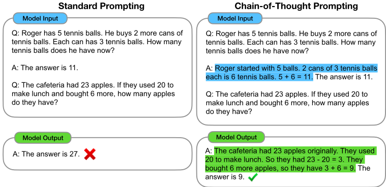
第36届神经信息处理系统大会（NeurIPS 2022）。
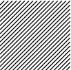
The NLP landscape has recently been revolutionized by language models (Peters et al., 2018; Devlin et al., 2019; Brown et al., 2020, inter alia ). Scaling up the size of language models has been shown to confer a range of benefits, such as improved performance and sample efficiency (Kaplan et al., 2020; Brown et al., 2020, inter alia ). However, scaling up model size alone has not proved sufficient for achieving high performance on challenging tasks such as arithmetic, commonsense, and symbolic reasoning (Rae et al., 2021).
This work explores how the reasoning ability of large language models can be unlocked by a simple method motivated by two ideas. First, techniques for arithmetic reasoning can benefit from generating natural language rationales that lead to the final answer. Prior work has given models the ability to generate natural language intermediate steps by training from scratch (Ling et al., 2017) or finetuning a pretrained model (Cobbe et al., 2021), in addition to neuro-symbolic methods that use formal languages instead of natural language (Roy and Roth, 2015; Chiang and Chen, 2019; Amini et al., 2019; Chen et al., 2019). Second, large language models offer the exciting
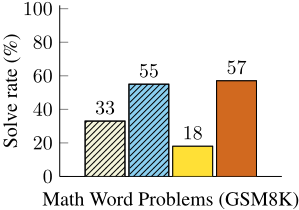
prospect of in-context few-shot learning via prompting . That is, instead of finetuning a separate language model checkpoint for each new task, one can simply 'prompt' the model with a few input-output exemplars demonstrating the task. Remarkably, this has been successful for a range of simple question-answering tasks (Brown et al., 2020).
Both of the above ideas, however, have key limitations. For rationale-augmented training and finetuning methods, it is costly to create a large set of high quality rationales, which is much more complicated than simple input-output pairs used in normal machine learning. For the traditional fewshot prompting method used in Brown et al. (2020), it works poorly on tasks that require reasoning abilities, and often does not improve substantially with increasing language model scale (Rae et al., 2021). In this paper, we combine the strengths of these two ideas in a way that avoids their limitations. Specifically, we explore the ability of language models to perform few-shot prompting for reasoning tasks, given a prompt that consists of triples: 〈 input, chain of thought , output 〉 . A chain of thought is a series of intermediate natural language reasoning steps that lead to the final output, and we refer to this approach as chain-of-thought prompting . An example prompt is shown in Figure 1.
我们在算术、常识和符号推理基准测试上进行了实证评估，结果表明思维链（chain-of-thought, CoT）提示优于标准提示，有时优势十分惊人。图 2 展示了其中一项结果——在数学应用题基准测试 GSM8K（Cobbe et al., 2021）上，使用 PaLM 540B 的思维链提示大幅优于标准提示，并取得了新的最先进（state-of-the-art）性能。仅使用提示的方法之所以重要，是因为它不需要大型训练数据集，而且单个模型检查点（checkpoint）可以在不损失通用性的情况下执行许多任务。这项工作凸显了大语言模型如何能够通过少量关于任务的自然语言数据示例进行学习（对比：通过大型训练数据集自动学习输入与输出背后的模式）。
想一想我们在解决诸如多步数学应用题这类复杂推理任务时自身的思维过程。典型的做法是把问题分解为若干中间步骤，并在给出最终答案之前逐个求解：“Jane 给她妈妈 2 朵花之后，她有 10 朵……接着她再给爸爸 3 朵之后，她将会有 7 朵……所以答案是 7。”本文的目标是赋予语言模型生成类似思维链（chain-of-thought, CoT）的能力——即一系列连贯的中间推理步骤，最终导向问题的答案。我们将证明，只要在少样本提示（few-shot prompting）的示例中提供思维链推理的示范，足够大的语言模型就能够生成思维链。
图 1 给出了一个模型生成思维链来求解一道数学应用题的示例，若不采用这种方式，模型原本会答错这道题。此处的思维链类似于一个解答，也可以被解读为解答，但我们仍选择称其为思维链，以便更好地体现这样一种理念：它模仿了为得出答案而进行的逐步思考过程（此外，解答/解释通常出现在最终答案之后（Narang et al., 2020; Wiegreffe et al., 2022; Lampinen et al., 2022, inter alia））。
作为一种促进语言模型进行推理的方法，思维链提示具有若干吸引人的特性。
在实证实验中，我们将观察到思维链提示在算术推理（第 3 节）、常识推理（第 4 节）和符号推理（第 5 节）方面的效用。
我们首先考虑如图 1 所示形式的数学应用题，这类题目用于衡量语言模型的算术推理能力。算术推理虽然对人类而言很简单，但却是语言模型常常难以胜任的任务（Hendrycks et al., 2021; Patel et al., 2021, inter alia）。令人惊讶的是，当思维链提示与 540B 参数的语言模型结合使用时，其在若干任务上的表现可与针对特定任务微调的模型相媲美，甚至在具有挑战性的 GSM8K 基准测试（benchmark）上取得了新的最先进水平（Cobbe et al., 2021）。
我们在多个基准测试（benchmark）上探索了针对各种语言模型的思维链（chain-of-thought, CoT）提示。
基准测试。我们考虑以下五个数学应用题基准测试：（1）数学应用题基准测试 GSM8K（Cobbe et al., 2021），（2）具有不同结构的数学应用题数据集 SVAMP（Patel et al., 2021），（3）多样化数学应用题数据集 ASDiv（Miao et al., 2020），（4）代数应用题数据集 AQuA，以及（5）MAWPS 基准测试（Koncel-Kedziorski et al., 2016）。示例问题见附录表 12。
标准提示。作为基线，我们考虑由 Brown et al. (2020) 推广的标准少样本（few-shot）提示，其中语言模型在为测试时样例输出预测之前，会先获得由输入-输出对构成的上下文（in-context）示例。示例以问题与答案的格式呈现。模型直接给出答案，如图 1（左）所示。
思维链提示。我们提出的方法是在少样本提示中为每个示例补充一条与相应答案相关联的思维链，如图 1（右）所示。由于大多数数据集只有评估集，我们人工编写了一组用于提示的八条带思维链的少样本示例——图 1（右）展示了一条思维链示例，完整的示例集见附录表 20。（这些特定示例并未经过提示工程；其鲁棒性在第 3.4 节和附录 A.2 中进行研究。）为考察这种形式的思维链提示能否在一系列数学应用题上成功激发出成功的推理，我们对除 AQuA 之外的所有基准测试均使用这同一组八条思维链示例，AQuA 是选择题而非自由作答题。对于 AQuA，我们使用了来自训练集的四个示例及解答，如附录表 21 所示。
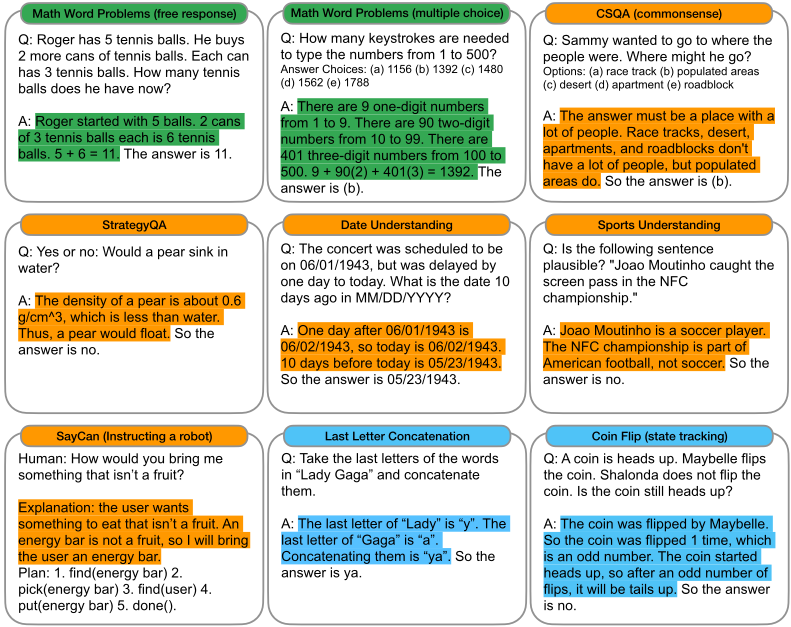
语言模型。我们评估了五个大型语言模型。第一个是 GPT-3（Brown et al., 2020），我们使用其中的 text-ada-001、text-babbage-001、text-curie-001 和 text-davinci-002，它们推测分别对应参数量为 350M、1.3B、6.7B 和 175B 的 InstructGPT 模型（Ouyang et al., 2022）。第二个是 LaMDA（Thoppilan et al., 2022），其拥有参数量为 422M、2B、8B、68B 和 137B 的模型。第三个是 PaLM，其拥有参数量为 8B、62B 和 540B 的模型。第四个是 UL2 20B（Tay et al., 2022），第五个是 Codex（Chen et al., 2021，OpenAI API 中的 code-davinci-002）。我们通过贪心解码（greedy decoding）从模型中采样（尽管后续工作表明，通过对多次采样生成结果取多数最终答案可以改进思维链提示（Wang et al., 2022a））。对于 LaMDA，我们报告五个随机种子上的平均结果，其中每个种子对应一个不同的随机打乱的示例顺序。由于 LaMDA 实验在不同种子之间未显示出较大方差，为节省计算量，我们对所有其他模型仅报告单一示例顺序的结果。
The strongest results of chain-of-thought prompting are summarized in Figure 4, with all experimental outputs for each model collection, model size, and benchmark shown in Table 2 in the Appendix. There are three key takeaways. First, Figure 4 shows that chain-of-thought prompting is an emergent ability of model scale (Wei et al., 2022b). That is, chain-of-thought prompting does not positively impact performance for small models, and only yields performance gains when used with models of ∼ 100B parameters. We qualitatively found that models of smaller scale produced fluent but illogical chains of thought, leading to lower performance than standard prompting.
Second, chain-of-thought prompting has larger performance gains for more-complicated problems. For instance, for GSM8K (the dataset with the lowest baseline performance), performance more than doubled for the largest GPT and PaLM models. On the other hand, for SingleOp, the easiest subset of MAWPS which only requires a single step to solve, performance improvements were either negative or very small (see Appendix Table 3).
Third, chain-of-thought prompting via GPT-3 175B and PaLM 540B compares favorably to prior state of the art, which typically finetunes a task-specific model on a labeled training dataset. Figure 4 shows how PaLM 540B uses chain-ofthought prompting to achieve new state of the art on GSM8K, SVAMP, and MAWPS (though note that standard prompting already passed the prior best for SVAMP). On the other two datasets, AQuA and ASDiv, PaLM with chain-of-thought prompting reaches within 2% of the state of the art (Appendix Table 2).
To better understand why chain-of-thought prompting works, we manually examined modelgenerated chains of thought by LaMDA 137B for GSM8K. Of 50 random examples where the model returned the correct final answer, all of the generated chains of thought were also logically and mathematically correct except two that coincidentally arrived at the correct answer (see Appendix D.1, and Table 8 for examples of correct model-generated chains of thought). We also randomly examined 50 random samples for which the model gave the wrong answer. The summary of this analysis is that 46% of the chains of thought were almost correct, barring minor mistakes (calculator error, symbol map- Model scale (# parameters in billions)
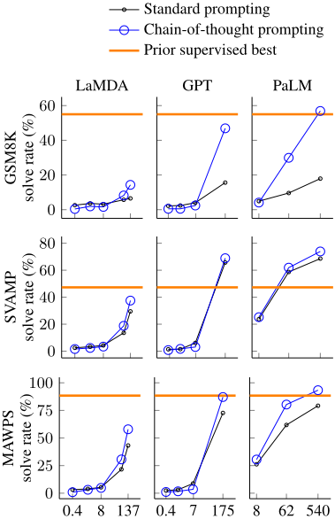
ping error, or one reasoning step missing), and that the other 54% of the chains of thought had major errors in semantic understanding or coherence (see Appendix D.2). To provide a small insight into why scaling improves chain-of-thought reasoning ability, we performed a similar analysis of errors made by PaLM 62B and whether those errors were fixed by scaling to PaLM 540B. The summary is that scaling PaLM to 540B fixes a large portion of one-step missing and semantic understanding errors in the 62B model (see Appendix A.1).
使用思维链（chain-of-thought, CoT）提示所带来的收益引出了一个自然的问题：同样的性能提升能否通过其他类型的提示来实现。图 5 展示了一项消融研究，其中包含下文所述的思维链的三种变体。
仅方程（Equation only）。思维链提示之所以可能有所帮助，一个原因在于它生成了待求值的数学方程，因此我们测试了一种变体：提示模型在给出答案之前仅输出一个数学方程。图 5 显示，仅方程提示对 GSM8K 的帮助不大，这意味着 GSM8K 中问题的语义过于困难，若没有思维链中的自然语言推理步骤，便难以直接转化为方程。然而，对于由单步或两步问题组成的数据集，我们发现仅方程提示确实能提升性能，因为方程可以很容易地从问题中推导出来（参见附录表 6）。
仅可变计算（Variable compute only）。另一种直觉是，思维链使模型能够在更难的问题上投入更多计算（即中间 token）。为了将可变计算的效果与思维链推理分离开来，我们测试了一种配置：提示模型仅输出一串点号（. . .），其数量等于解题所需方程中的字符数。该变体的表现与基线大致相同，这表明可变计算本身并不是思维链提示取得成功的原因，而通过自然语言表达中间步骤似乎确实有其效用。
答案后思维链（Chain of thought after answer）。思维链提示的另一个潜在好处可能仅仅在于：这类提示使模型能够更好地访问其在预训练期间习得的相关知识。因此，我们测试了另一种配置，其中思维链提示仅在答案之后给出，以此隔离检验模型是否真的依赖所生成的思维链来给出最终答案。该变体的表现与基线大致相同，这表明思维链所体现的顺序推理之所以有用，其原因不仅仅是激活知识。
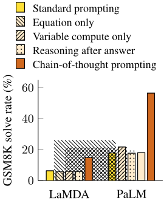
Sensitivity to exemplars is a key consideration of prompting approaches-for instance, varying the permutation of few-shot exemplars can cause the accuracy of GPT-3 on SST-2 to range from near chance (54.3%) to near state of the art (93.4%) (Zhao et al., 2021). In this final subsection, we evaluate robustness to chains of thought written by different annotators. In addition to the results above, which used chains of thought written by an Annotator A, two other co-authors of this paper (Annotators B and C) independently wrote chains of thought for the same few-shot exemplars (shown in Appendix H). Annotator A also wrote another chain of thought that was more concise than the original, following the style of solutions given in Cobbe et al. (2021). 1
Figure 6 shows these results for LaMDA 137B on GSM8K and MAWPS (ablation results for other datasets are given in Appendix Table 6 / Table 7). Although there is variance among different chain of thought annotations, as would be expected when using exemplar-based prompting (Le Scao and Rush, 2021; Reynolds and McDonell, 2021; Zhao et al., 2021), all sets of chain of thought prompts outperform the standard baseline by a large margin. This result implies that successful use of chain of thought does not depend on a particular linguistic style.
To confirm that successful chain-of-thought prompting works for other sets of exemplars, we also run experiments
with three sets of eight exemplars randomly sampled from the GSM8K training set, an independent source (examples in this dataset already included reasoning steps like a chain of thought). 2 Figure 6 shows that these prompts performed comparably with our manually written exemplars, also substantially outperforming standard prompting.
1 For instance, whereas original chain of thought uses several short sentences ( ''There were originally 9 computers. For each of 4 days, 5 more computers were added. So 5 * 4 = 20 computers were added. 9 + 20 is 29. ' ), the concise chain of thought would read '5 * 4 = 20 new computers were added. So there are 9 + 20 = 29 new computers in the server room now' .
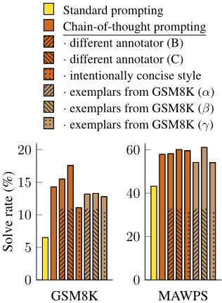
In addition to robustness to annotators, independently-written chains of thought, different exemplars, and various language models, we also find that chain-of-thought prompting for arithmetic reasoning is robust to different exemplar orders and varying numbers of exemplars (see Appendix A.2).
尽管思维链（chain-of-thought, CoT）特别适用于数学应用题，但思维链基于语言的本质实际上使其适用于一大类常识推理问题，这类问题需要在假定具备一般背景知识的前提下，对物理世界和人类交互进行推理。常识推理是与世界交互的关键，但目前仍超出当前自然语言理解系统的能力范围（Talmor et al., 2021）。
基准测试（benchmark）。我们考虑了五个数据集，涵盖多种不同类型的常识推理。流行的 CSQA（Talmor et al., 2019）提出关于世界的常识问题，这些问题涉及复杂的语义，通常需要先验知识。StrategyQA（Geva et al., 2021）要求模型推断出一种多跳（multi-hop）策略来回答问题。我们从 BIG-bench 项目（BIG-bench collaboration, 2021）中选择了两个专门的评测集：日期理解（Date Understanding），涉及从给定上下文中推断日期；以及体育理解（Sports Understanding），涉及判断一个与体育相关的句子是合理的还是不合理的。最后，SayCan 数据集（Ahn et al., 2022）涉及将自然语言指令映射为来自一个离散集合的机器人动作序列。图 3 展示了所有数据集带有思维链标注的示例。
提示。我们遵循与上一节相同的实验设置。对于 CSQA 和 StrategyQA，我们从训练集中随机选取示例，并为其人工编写思维链，用作少样本（few-shot）示例。两个 BIG-bench 任务没有训练集，因此我们选取评测集中的前十个示例作为少样本示例，并在评测集的其余部分上报告结果。对于 SayCan，我们使用 Ahn et al. (2022) 中所使用的训练集中的六个示例，同样为其人工编写了思维链。
结果。图 7 突出展示了 PaLM 的这些结果（LaMDA、GPT-3 以及不同模型规模的完整结果见表 4）。在所有任务上，扩大模型规模都提升了标准提示的性能；而思维链提示带来了进一步的提升，其中 PaLM 540B 的提升看起来最大。借助思维链提示，PaLM 540B 相对于基线取得了强劲的性能，在 StrategyQA 上超越了此前最先进的水平（75.6% vs 69.4%），在体育理解上超越了一位不借助任何辅助的体育爱好者（95.4% vs 84%）。这些结果表明，思维链提示还能提升需要多种常识推理能力的任务的性能（不过请注意，在 CSQA 上的提升很小）。
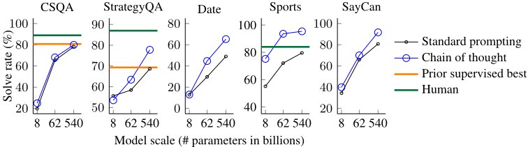
2 我们采样不超过 60 个 token 的示例，以适配我们的输入上下文窗口（context window），并将示例限制为求解步骤不超过 2 步，以便与我们编写的八个示例进行公平比较。
Our final experimental evaluation considers symbolic reasoning, which is simple for humans but potentially challenging for language models. We show that chain-ofthought prompting not only enables language models to perform symbolic reasoning tasks that are challenging in the standard prompting setting, but also facilitates length generalization to inference-time inputs longer than those seen in the few-shot exemplars.
Tasks. We use the following two toy tasks.
As the construction of these symbolic reasoning tasks is well-defined, for each task we consider an in-domain test set for which examples had the same number of steps as
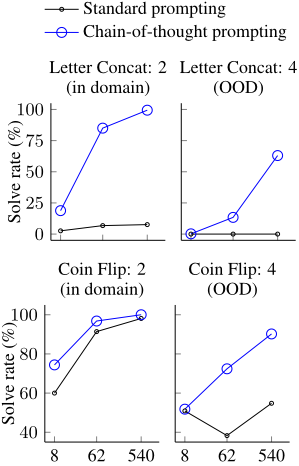
the training/few-shot exemplars, as well as an out-of-domain (OOD) test set, for which evaluation examples had more steps than those in the exemplars. For last letter concatenation, the model only sees exemplars of names with two words, and then performs last letter concatenation on names with 3 and 4 words. 4 We do the same for the number of potential flips in the coin flip task. Our experimental setup uses the same methods and models as in the prior two sections. We again manually compose chains of thought for the few-shot exemplars for each task, which are given in Figure 3.
Results. The results of these in-domain and OOD evaluations are shown in Figure 8 for PaLM, with results for LaMDA shown in Appendix Table 5. With PaLM 540B, chain-of-thought prompting leads to almost 100% solve rates (note that standard prompting already solves coin flip with PaLM 540, though not for LaMDA 137B). Note that these in-domain evaluations are 'toy tasks' in the sense that perfect solution structures are already provided by the chains of thought in the few-shot exemplars; all the model has to do is repeat the same steps with the new symbols in the test-time example. And yet, small models still fail-the ability to perform abstract manipulations on unseen symbols for these three tasks only arises at the scale of 100B model parameters.
As for the OOD evaluations, standard prompting fails for both tasks. With chain-of-thought prompting, language models achieve upward scaling curves (though performance is lower than in the in-domain setting). Hence, chain-of-thought prompting facilitates length generalization beyond seen chains of thought for language models of sufficient scale.
我们探索了思维链（chain-of-thought, CoT）提示作为一种简单的机制，用于在大型语言模型中引出多步推理行为。我们首先看到，思维链提示在算术推理上大幅提升了性能，其带来的改进远强于消融实验，并且对不同的标注者、示例和语言模型都具有鲁棒性（第 3 节）。接下来，关于常识推理的实验凸显了思维链推理的语言性质如何使其具有普遍适用性（第 4 节）。最后，我们表明，对于符号推理，思维链提示促进了向更长序列长度的分布外（OOD）泛化（第 5 节）。在所有实验中，思维链推理仅通过对现成的语言模型进行提示即可引出。在撰写本文的过程中，没有微调任何语言模型。
3 我们使用 GPT-3 davinci 测试了 10 个常见名字，除一个外全部答对。
4 对于长度超过 2 个单词的名字，我们将多个名和姓拼接在一起。
思维链推理随模型规模而涌现一直是一个普遍的主题（Wei et al., 2022b）。对于许多标准提示呈现平坦缩放曲线的推理任务，思维链提示带来了急剧上升的缩放曲线。思维链提示似乎扩展了大型语言模型能够成功执行的任务集合——换言之，我们的工作强调，标准提示仅提供了大型语言模型能力的下限。这一观察所提出的问题很可能多于它所回答的问题——例如，随着模型规模的进一步增大，我们可以期望推理能力还能提升多少？还有哪些其他的提示方法可能会扩展语言模型所能解决的任务范围？
至于局限性，我们首先需要说明，尽管思维链模拟了人类推理者的思维过程，但这并不能回答神经网络是否真的在“推理”，我们将此留作一个开放问题。其次，尽管在少样本（few-shot）设置中，用思维链人工增强示例的成本极小，但对于微调而言，这种标注成本可能高得难以承受（不过这或许可以通过合成数据生成或零样本（zero-shot）泛化来克服）。第三，无法保证推理路径的正确性，而推理路径既可能导致正确答案，也可能导致错误答案；改进语言模型的事实性生成是未来工作的一个开放方向（Rashkin et al., 2021; Ye and Durrett, 2022; Wiegreffe et al., 2022, inter alia）。最后，思维链推理仅在大型模型规模下才涌现，这使得在实际应用中提供服务的成本很高；进一步的研究可以探索如何在更小的模型中诱导推理。
本工作受到许多研究领域的启发，我们在扩展的相关工作章节（附录 C）中对其进行了详细介绍。在此，我们描述两个或许最为相关的方向及其相关论文。
第一个相关方向是使用中间步骤来解决推理问题。Ling et al. (2017) 率先提出通过一系列中间步骤、利用自然语言理由来解决数学应用题的想法。他们的工作与使用形式语言进行推理的文献形成了鲜明对比（Roy et al., 2015; Chiang and Chen, 2019; Amini et al., 2019; Chen et al., 2019）。Cobbe et al. (2021) 对 Ling et al. (2017) 进行了扩展，构建了规模更大的数据集，并用其微调预训练语言模型，而不是从头训练模型。在程序合成领域，Nye et al. (2021) 利用语言模型来预测 Python 程序的最终输出，其方式是先逐行预测中间计算结果，并表明他们的逐步预测方法优于直接预测最终输出。
自然地，本文也与近期大量关于提示（prompting）的工作密切相关。自 Brown et al. (2020) 推广少样本提示（few-shot prompting）以来，若干通用方法已经提升了模型的提示能力，例如自动学习提示（Lester et al., 2021），或向模型提供描述任务的指令（Wei et al., 2022a; Sanh et al., 2022; Ouyang et al., 2022）。这些方法改进或增强的是提示的输入部分（例如前置在输入之前的指令），而我们的工作则采取与之正交的方向，通过思维链（chain-of-thought, CoT）来增强语言模型的输出。
我们探索了思维链提示作为一种简单且具有广泛适用性的方法，用于增强语言模型的推理能力。通过在算术、符号和常识推理上的实验，我们发现思维链推理是模型规模的一种涌现特性，它使得足够大的语言模型能够完成那些原本缩放曲线平坦的推理任务。拓宽语言模型所能执行的推理任务的范围，有望激励对基于语言的推理方法的进一步研究。
The finding that successful chain-of-thought reasoning predictably emerges only at certain model scales is intriguing. Scaling up language models has been shown to confer benefits such as improved performance and sample efficiency (Kaplan et al., 2020), but chain-of-thought reasoning is emergent in the sense that its success cannot be predicted only by extrapolating the performance of small scale models, as chain of thought actually hurts performance for most models smaller than 10B parameters.
The question of why model scale improves chain-of-thought prompting is certainly multi-faceted, and we made a preliminary attempt to shed insight into it via error analysis. This small analysis involved manually reading 45 errors made by PaLM 62B and categorizing them into semantic understanding (20 errors), one step missing (18 errors), and other errors (7 errors). The 'other category' included hallucinations, repetitive outputs, and symbol mapping errors. This categorization is a coarse one borrowed from the initial error analysis done on LaMDA in Appendix D.2, for which categories were conceived based on what improvements were needed to make the chain of thought correct.
As shown in Figure 9, scaling PaLM to 540B parameters fixed a substantial portion of errors in all three categories. Examples of semantic understanding and one-step missing errors that were fixed by scaling PaLM to 540B are given in Figure 10. This result appears consistent with a hypothesis that language models acquire a range of semantic understanding and logical reasoning skills as a function of model scale (though note that model scale is often conflated with other factors, such as amount of training compute).
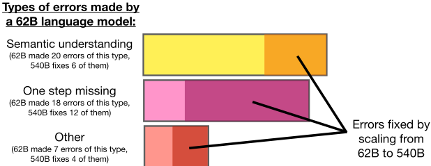
There are also three notable points regarding why small language models fail. The first observation is that small language models fail at even relatively easy symbol mapping tasks. As demonstrated in Section 5, for even symbolic reasoning tasks that only require generalization to new examples using the same chain of thought logical structure that was given in the few-shot exemplars, small language models still failed. The second observation is that small language models seem to have inherently weaker arithmetic abilities, as shown by Brown et al. (2020), the ability to do simple arithmetic operations (without semantic understanding) requires sufficient model scale. Finally, we noticed qualitatively that small language models often did not generate a final answer that could be parsed, due to either repetitions or logic that never arrived at a final answer.
总而言之，思维链推理的成功源于模型规模，这是一个复杂的现象，可能涉及多种涌现能力（语义理解、符号映射、紧扣主题、算术能力、忠实性等）。未来的工作可以更深入地研究预训练数据、模型架构和优化目标的哪些特性在因果上促成了这样的推理能力。
16
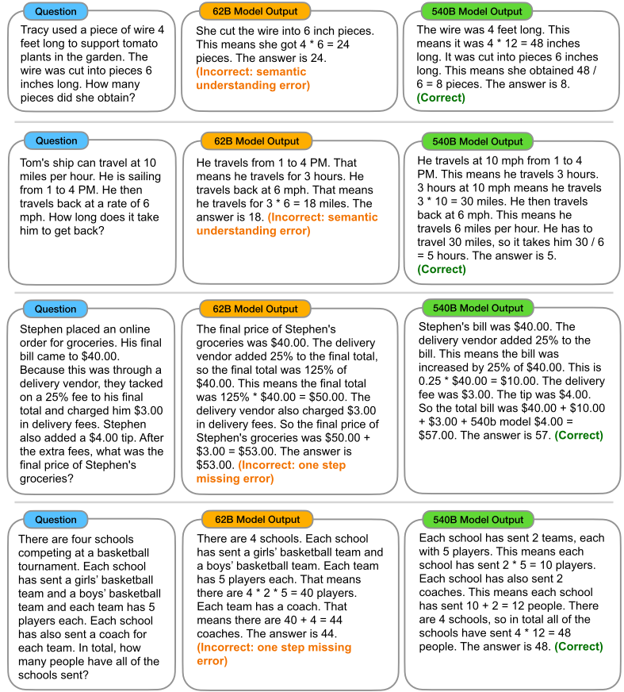
提示的一个关键考量因素是对确切提示词的敏感性。已有大量工作表明，提示会以意想不到的方式影响语言模型（Min et al., 2022）。我们创建思维链标注的一般方法是：从训练集中选取八个示例，并将推理过程分解为导向最终答案的多个步骤。图3给出了思维链标注的示例，完整提示见附录G。为了分析思维链对提示工程的敏感程度，我们针对各种因素进行了鲁棒性实验。
17
关于如何撰写思维链标注，除了简单地写出导向最终答案的逐步推理过程之外。因此，标注是以每位标注者自己的语言“思维链”写作风格撰写的。
不过，提示工程仍然很重要。尽管在算术推理方面结果对提示相对鲁棒，但我们想明确指出，提示工程确实仍然重要，并且在许多情况下能够显著提升性能。虽然大多数思维链标注的表现优于标准提示，但在许多情况下存在较大差异。例如，在抛硬币任务中，性能从标注者A的99.6%到标注者C的71.4%不等，不过两者均高于标准提示的50.0%（见表7）。甚至有些任务中，提示工程是取得良好性能的必要条件。在初步实验中，我们尝试使用思维链使语言模型能够反转一个包含5个元素的列表的顺序。尽管两位共同作者竭尽全力，仍未能写出能解决该任务的思维链提示，而第三位共同作者却写出了一个完美解决该任务的思维链。
如何以鲁棒的方式生成思维链标注，可能是未来工作的一个有趣方向。例如，一个想法是使用大语言模型通过提示自动生成思维链（并可能在一个验证集上对此进行优化）。
虽然思维链提示在原则上适用于任何文本到文本的任务，但它对某些任务的帮助大于其他任务。基于本文的实验，我们的直觉是，当满足以下三个条件时，思维链的帮助最大：（1）任务具有挑战性且需要多步推理；（2）使用大语言模型；（3）缩放曲线相对平坦。反之，当其中一个或多个条件不满足时，收益会较小。
这些直觉或许可以从算术推理结果中得到支持。思维链提示带来的性能提升在 PaLM 540B 于 GSM8K（具有挑战性的多步问题、平坦的缩放曲线）上最大，该情况满足这些条件。而对于 MAWPS 中仅需一步或两步的子集（SingleOP、SingleEq 和 AddSub），性能提升较小，PaLM 540B 在这些子集上已达到 90% 或更高的性能（而且通常来说，当性能已经很强时，改进的余地也更小）。
尽管本文聚焦于多步推理任务（算术、常识和符号），但思维链提示有可能应用于任何人类会使用“思维链”来求解的任务（至少在原则上如此）。我们将思维链提示在这类多样化任务（例如机器翻译等）上的实证评估留待未来工作。
仅以等式作为中间步骤进行提示，确实在许多数据集上有所帮助，尤其是当数据集只需要少量推理步骤时（SVAMP、ASDiv、MAWPS）。然而，对于 GSM8K，仅使用等式并未带来实质性的性能提升。基于定性分析，我们认为这些问题在语义上过于复杂，模型难以直接将其翻译成一个数学等式。请看这个来自 LaMDA 137B 的例子：
问题：迈克打了 40 分钟乒乓球。在前 20 分钟里，他得了 4 分。在后 20 分钟里，他多得了 25% 的分数。他总共得了多少分？
仅等式（错误答案）：(4 + 20 * 0.25) = 6。答案是 6。
思维链（正确）：迈克打了 40 分钟乒乓球。在前 20 分钟里，他得了 4 分。在后 20 分钟里，他多得了 25% 的分数。所以他在后 20 分钟里多得了 25% 的分数。4 x 1.25 = 5。所以他在后 20 分钟里得了 5 分。所以他总共得了 9 分。答案是 9。
模型很难将全部语义直接翻译成单个等式，但思维链使其能够通过自然语言的中间步骤，对问题的各个部分进行更好的推理。
19
本节包含在多种模型和不同模型规模上、于所有基准测试（benchmark）中，标准提示与思维链（CoT）提示的实验结果表格。
对于算术推理基准测试，一些思维链（连同其生成的等式）是正确的，只是模型在执行某次算术运算时出现了错误。Cobbe 等人（2021）也观察到了类似现象。因此，我们可以进一步添加一个 Python 程序作为外部计算器（使用 Python eval 函数），对生成的思维链中的所有等式进行计算。当一条思维链中存在多个等式时，我们通过字符串匹配将外部计算器的结果从一个等式传递到后续等式。如表 1 所示，可以看到添加计算器显著提升了思维链提示在大多数任务上的性能。
| Prompting | GSM8K | SVAMP | ASDiv | AQuA | MAWPS | |
|---|---|---|---|---|---|---|
| Prior best | N/A (finetuning) | 55 a | 57.4 b | 75.3 c | 37.9 d | 88.4 e |
| UL2 20B | Standard Chain of thought + ext. calc | 4.1 4.4 (+0.3) 6.9 | 10.1 12.5 (+2.4) 28.3 | 16.0 16.9 (+0.9) 34.3 | 20.5 23.6 (+3.1) 23.6 | 16.6 19.1 (+2.5) 42.7 |
| LaMDA 137B | Standard Chain of thought + ext. calc | 6.5 14.3 (+7.8) 17.8 | 29.5 37.5 (+8.0) 42.1 | 40.1 46.6 (+6.5) 53.4 | 25.5 20.6 (-4.9) 20.6 | 43.2 57.9 (+14.7) 69.3 |
| GPT-3 175B (text-davinci-002) | Standard Chain of thought + ext. calc | 15.6 46.9 (+31.3) 49.6 | 65.7 68.9 (+3.2) 70.3 | 70.3 71.3 (+1.0) 71.1 | 24.8 35.8 (+11.0) 35.8 | 72.7 87.1 (+14.4) 87.5 |
| Codex (code-davinci-002) | Standard Chain of thought + ext. calc | 19.7 63.1 (+43.4) 65.4 | 69.9 76.4 (+6.5) 77.0 | 74.0 80.4 (+6.4) 80.0 | 29.5 45.3 (+15.8) 45.3 | 78.7 92.6 (+13.9) 93.3 |
| PaLM 540B | Standard Chain of thought + ext. calc | 17.9 56.9 (+39.0) 58.6 | 69.4 79.0 (+9.6) 79.8 | 72.1 73.9 (+1.8) 72.6 | 25.2 35.8 (+10.6) 35.8 | 79.2 93.3 (+14.2) 93.5 |
| | Prompting | GSM8K | SVAMP | ASDiv | AQuA | MAWPS |
| Model | GSM8K.standard | GSM8K.CoT | SVAMP.standard | SVAMP.CoT | ASDiv.standard | ASDiv.CoT | AQuA.standard | AQuA.CoT | MAWPS.standard | MAWPS.CoT | |
|---|---|---|---|---|---|---|---|---|---|---|---|
| UL2 | 20B | 4.1 | 4.4 | 10.1 | 12.5 | 16 | 16.9 | 20.5 | 23.6 | 16.6 | 19.1 |
| LaMDA | 420M | 2.6 | 0.4 | 2.5 | 1.6 | 3.2 | 0.8 | 23.5 | 8.3 | 3.2 | 0.9 |
| LaMDA | 2B | 3.6 | 1.9 | 3.3 | 2.4 | 4.1 | 3.8 | 22.9 | 17.7 | 3.9 | 3.1 |
| LaMDA | 8B | 3.2 | 1.6 | 4.3 | 3.4 | 5.9 | 5 | 22.8 | 18.6 | 5.3 | 4.8 |
| LaMDA | 68B | 5.7 | 8.2 | 13.6 | 18.8 | 21.8 | 23.1 | 22.3 | 20.2 | 21.6 | 30.6 |
| LaMDA | 137B | 6.5 | 14.3 | 29.5 | 37.5 | 40.1 | 46.6 | 25.5 | 20.6 | 43.2 | 57.9 |
| GPT | 350M | 2.2 | 0.5 | 1.4 | 0.8 | 2.1 | 0.8 | 18.1 | 8.7 | 2.4 | 1.1 |
| GPT | 1.3B | 2.4 | 0.5 | 1.5 | 1.7 | 2.6 | 1.4 | 12.6 | 4.3 | 3.1 | 1.7 |
| GPT | 6.7B | 4 | 2.4 | 6.1 | 3.1 | 8.6 | 3.6 | 15.4 | 13.4 | 8.8 | 3.5 |
| GPT | 175B | 15.6 | 46.9 | 65.7 | 68.9 | 70.3 | 71.3 | 24.8 | 35.8 | 72.7 | 87.1 |
| Codex | - | 19.7 | 63.1 | 69.9 | 76.4 | 74 | 80.4 | 29.5 | 45.3 | 78.7 | 92.6 |
| PaLM | 8B | 4.9 | 4.1 | 15.1 | 16.8 | 23.7 | 25.2 | 19.3 | 21.7 | 26.2 | 30.5 |
| PaLM | 62B | 9.6 | 29.9 | 48.2 | 46.7 | 58.7 | 61.9 | 25.6 | 22.4 | 61.8 | 80.3 |
| PaLM | 540B | 17.9 | 56.9 | 69.4 | 79 | 72.1 | 73.9 | 25.2 | 35.8 | 79.2 | 93.3 |
| Model | | GSM8K.standard | GSM8K.CoT | SVAMP.standard | SVAMP.CoT | ASDiv.standard | ASDiv.CoT | AQuA.standard | AQuA.CoT | MAWPS.standard | MAWPS.CoT |
| Model | SingleOp.standard | SingleOp.CoT | SingleEq.standard | SingleEq.CoT | AddSub.standard | AddSub.CoT | MultiArith.standard | MultiArith.CoT | |
|---|---|---|---|---|---|---|---|---|---|
| UL2 | 20B | 24.9 | 27.2 | 18 | 20.2 | 18.5 | 18.2 | 5 | 10.7 |
| LaMDA | 420M | 2.8 | 1 | 2.4 | 0.4 | 1.9 | 0.7 | 5.8 | 1.5 |
| LaMDA | 2B | 4.6 | 4.1 | 2.4 | 3.3 | 2.7 | 3.2 | 5.8 | 1.8 |
| LaMDA | 8B | 8 | 7 | 4.5 | 4.4 | 3.4 | 5.2 | 5.2 | 2.4 |
| LaMDA | 68B | 36.5 | 40.8 | 23.9 | 26 | 17.3 | 23.2 | 8.7 | 32.4 |
| LaMDA | 137B | 73.2 | 76.2 | 48.8 | 58.7 | 43 | 51.9 | 7.6 | 44.9 |
| GPT | 350M | 3.2 | 1.8 | 2 | 0.2 | 2 | 1.5 | 2.3 | 0.8 |
| GPT | 1.3B | 5.3 | 3 | 2.4 | 1.6 | 2.3 | 1.5 | 2.2 | 0.5 |
| GPT | 6.7B | 13.5 | 3.9 | 8.7 | 4.9 | 8.6 | 2.5 | 4.5 | 2.8 |
| GPT | 175B | 90.9 | 88.8 | 82.7 | 86.6 | 83.3 | 81.3 | 33.8 | 91.7 |
| Codex | - | 93.1 | 91.8 | 86.8 | 93.1 | 90.9 | 89.1 | 44 | 96.2 |
| PaLM | 8B | 41.8 | 46.6 | 29.5 | 28.2 | 29.4 | 31.4 | 4.2 | 15.8 |
| PaLM | 62B | 87.9 | 85.6 | 77.2 | 83.5 | 74.7 | 78.2 | 7.3 | 73.7 |
| PaLM | 540B | 94.1 | 94.1 | 86.5 | 92.3 | 93.9 | 91.9 | 42.2 | 94.7 |
| Model | | SingleOp.standard | SingleOp.CoT | SingleEq.standard | SingleEq.CoT | AddSub.standard | AddSub.CoT | MultiArith.standard | MultiArith.CoT |
21
| Model | CSQA.standard | CSQA.CoT | StrategyQA.standard | StrategyQA.CoT | Date.standard | Date.CoT | Sports.standard | Sports.CoT | SayCan.standard | SayCan.CoT | |
|---|---|---|---|---|---|---|---|---|---|---|---|
| UL2 | 20B | 34.2 | 51.4 | 59 | 53.3 | 13.5 | 14 | 57.9 | 65.3 | 20 | 41.7 |
| LaMDA | 420M | 20.1 | 19.2 | 46.4 | 24.9 | 1.9 | 1.6 | 50 | 49.7 | 7.5 | 7.5 |
| LaMDA | 2B | 20.2 | 19.6 | 52.6 | 45.2 | 8 | 6.8 | 49.3 | 57.5 | 8.3 | 8.3 |
| LaMDA | 8B | 19 | 20.3 | 54.1 | 46.8 | 9.5 | 5.4 | 50 | 52.1 | 28.3 | 33.3 |
| LaMDA | 68B | 37 | 44.1 | 59.6 | 62.2 | 15.5 | 18.6 | 55.2 | 77.5 | 35 | 42.5 |
| LaMDA | 137B | 53.6 | 57.9 | 62.4 | 65.4 | 21.5 | 26.8 | 59.5 | 85.8 | 43.3 | 46.6 |
| GPT | 350M | 14.7 | 15.2 | 20.6 | 0.9 | 4.3 | 0.9 | 33.8 | 41.6 | 12.5 | 0.8 |
| GPT | 1.3B | 12 | 19.2 | 45.8 | 35.7 | 4 | 1.4 | 0 | 26.9 | 20.8 | 9.2 |
| GPT | 6.7B | 19 | 24 | 53.6 | 50 | 8.9 | 4.9 | 0 | 4.4 | 17.5 | 35 |
| GPT | 175B | 79.5 | 73.5 | 65.9 | 65.4 | 43.8 | 52.1 | 69.6 | 82.4 | 81.7 | 87.5 |
| Codex | - | 82.3 | 77.9 | 67.1 | 73.2 | 49 | 64.8 | 71.7 | 98.5 | 85.8 | 88.3 |
| PaLM | 8B | 19.8 | 24.9 | 55.6 | 53.5 | 12.9 | 13.1 | 55.1 | 75.2 | 34.2 | 40 |
| PaLM | 62B | 65.4 | 68.1 | 58.4 | 63.4 | 29.8 | 44.7 | 72.1 | 93.6 | 65.8 | 70 |
| PaLM | 540B | 78.1 | 79.9 | 68.6 | 77.8 | 49 | 65.3 | 80.5 | 95.4 | 80.8 | 91.7 |
| Model | | CSQA.standard | CSQA.CoT | StrategyQA.standard | StrategyQA.CoT | Date.standard | Date.CoT | Sports.standard | Sports.CoT | SayCan.standard | SayCan.CoT |
| Model | Last Letter Concatenation.2.standard | Last Letter Concatenation.OOD:.CoT | Last Letter Concatenation.3.standard | Last Letter Concatenation..CoT | Last Letter Concatenation.OOD:.standard | Last Letter Concatenation.4.CoT | Coin Flip (state tracking).2.standard | Coin Flip (state tracking).2.CoT | Coin Flip (state tracking).OOD: 3.standard CoT | Coin Flip (state tracking).OOD: 4.standard CoT | |
|---|---|---|---|---|---|---|---|---|---|---|---|
| UL2 | 20B | 0.6 | 18.8 | 0.0 | 0.2 | 0 | 0 | 70.4 | 67.1 | 51.6 52.2 | 48.7 50.4 |
| LaMDA | 420M | 0.3 | 1.6 | 0.0 | 0 | 0 | 0 | 52.9 | 49.6 | 50.0 50.5 | 49.5 49.1 |
| 2B | 2.3 | 6 | 0.0 | 0 | 0 | 0 | 54.9 | 55.3 | 47.4 48.7 | 49.8 50.2 | |
| 8B | 1.5 | 11.5 | 0.0 | 0 | 0 | 0 | 52.9 | 55.5 | 48.2 49.6 | 51.2 50.6 | |
| 68B | 4.4 52.0 | 0.0 | 0.8 | 0 | 2.5 | 56.2 | 83.2 | 50.4 69.1 | 50.9 59.6 | ||
| 137B | 5.8 77.5 | 0.0 | 34.4 | 0 | 13.5 | 49 | 99.6 | 50.7 91.0 | 49.1 74.5 | ||
| PaLM | 8B | 2.6 18.8 | 0.0 0.0 | 0 | 0.2 | 60 | 74.4 | 47.3 57.1 | 50.9 51.8 | ||
| 62B | 6.8 85.0 | 0.0 59.6 | 0 | 13.4 | 91.4 | 96.8 | 43.9 91.0 | 38.3 72.4 | |||
| 540B | 7.6 99.4 | 0.2 94.8 | 0 | 63 | 98.1 | 100 | 49.3 98.6 | 54.8 90.2 |
| Model | | Last Letter Concatenation.2.standard | Last Letter Concatenation.OOD:.CoT | Last Letter Concatenation.3.standard | Last Letter Concatenation..CoT | Last Letter Concatenation.OOD:.standard | Last Letter Concatenation.4.CoT | Coin Flip (state tracking).2.standard | Coin Flip (state tracking).2.CoT | Coin Flip (state tracking).OOD: 3.standard CoT | Coin Flip (state tracking).OOD: 4.standard CoT |
22
| GSM8K | SVAMP | ASDiv | MAWPS | |
|---|---|---|---|---|
| Standard prompting | 6.5 ± 0.4 | 29.5 ± 0.6 | 40.1 ± 0.6 | 43.2 ± 0.9 |
| Chain of thought prompting | 14.3 ± 0.4 | 36.7 ± 0.4 | 46.6 ± 0.7 | 57.9 ± 1.5 |
| Ablations · equation only | 5.4 ± 0.2 | 35.1 ± 0.4 | 45.9 ± 0.6 | 50.1 ± 1.0 |
| · variable compute only | 6.4 ± 0.3 | 28.0 ± 0.6 | 39.4 ± 0.4 | 41.3 ± 1.1 |
| · reasoning after answer | 6.1 ± 0.4 | 30.7 ± 0.9 | 38.6 ± 0.6 | 43.6 ± 1.0 |
| Robustness | ||||
| · different annotator (B) | 15.5 ± 0.6 | 35.2 ± 0.4 | 46.5 ± 0.4 | 58.2 ± 1.0 |
| · different annotator (C) | 17.6 ± 1.0 | 37.5 ± 2.0 | 48.7 ± 0.7 | 60.1 ± 2.0 |
| · intentionally concise style | 11.1 ± 0.3 | 38.7 ± 0.8 | 48.0 ± 0.3 | 59.6 ± 0.7 |
| · exemplars from GSM8K ( α ) | 12.6 ± 0.6 | 32.8 ± 1.1 | 44.1 ± 0.9 | 53.9 ± 1.1 |
| · exemplars from GSM8K ( β ) | 12.7 ± 0.5 | 34.8 ± 1.1 | 46.9 ± 0.6 | 60.9 ± 0.8 |
| · exemplars from GSM8K ( γ ) | 12.6 ± 0.7 | 35.6 ± 0.5 | 44.4 ± 2.6 | 54.2 ± 4.7 |
| | GSM8K | SVAMP | ASDiv | MAWPS |
| Commonsense.Date | Commonsense.Sports | Commonsense.SayCan | Symbolic.Concat | Symbolic.Coin | |
|---|---|---|---|---|---|
| Standard prompting | 21.5 ± 0.6 | 59.5 ± 3.0 | 80.8 ± 1.8 | 5.8 ± 0.6 | 49.0 ± 2.1 |
| Chain of thought prompting | 26.8 ± 2.1 | 85.8 ± 1.8 | 91.7 ± 1.4 | 77.5 ± 3.8 | 99.6 ± 0.3 |
| Ablations · variable compute only | 21.3 ± 0.7 | 61.6 ± 2.2 | 74.2 ± 2.3 | 7.2 ± 1.6 | 50.7 ± 0.7 |
| · reasoning after answer | 20.9 ± 1.0 | 63.0 ± 2.0 | 83.3 ± 0.6 | 0.0 ± 0.0 | 50.2 ± 0.5 |
| Robustness · different annotator (B) | 27.4 ± 1.7 | 75.4 ± 2.7 | 88.3 ± 1.4 | 76.0 ± 1.9 | 77.5 ± 7.9 |
| · different annotator (C) | 25.5 ± 2.5 | 81.1 ± 3.6 | 85.0 ± 1.8 | 68.1 ± 2.2 | 71.4 ± 11.1 |
| | Commonsense.Date | Commonsense.Sports | Commonsense.SayCan | Symbolic.Concat | Symbolic.Coin |
23
思维链提示是一种通用方法，其灵感来源于多个先前的研究方向：提示、自然语言解释、程序综合/执行、数值与逻辑推理，以及中间语言步骤。
大规模语言模型近期的成功使得人们越来越关注通过提示（prompting）来提升其执行任务的能力（Brown et al. (2020)；综述可参见 Liu et al. (2021)）。本文属于通用提示方法这一类别，即对输入提示进行优化，使单个大语言模型能够更好地执行多种任务（Li and Liang, 2021; Lester et al., 2021; Reif et al., 2022 等）。
近期的一条研究路线旨在通过提供描述任务的指令（instruction）来提升语言模型执行任务的能力（Raffel et al., 2020; Wei et al., 2022a; Ouyang et al., 2022; Sanh et al., 2022; Wang et al., 2022b）。这一研究路线与本工作相关，因为它同样使用元数据（meta-data）来增强输入-输出对。但指令是对任务的输入进行增强（指令通常被前置到输入之前），而思维链（chain-of-thought）提示则是对语言模型的输出进行增强。另一个相关方向是按顺序组合语言模型的输出；人机交互（human-computer interaction, HCI）领域的工作（Wu et al., 2022a,b）在一项 20 人参与的用户研究中表明，将语言模型的顺序生成结果组合起来能够改善任务效果。
另一个密切相关的方向是使用自然语言解释（natural language explanations, NLE），其目标通常是提升模型可解释性（Zhou et al., 2020; Wiegreffe and Marasovi´ c, 2021 等）。这一方向的工作通常聚焦于自然语言推理（natural language inference, NLI）（Camburu et al., 2018; Yordanov et al., 2021; Bostrom et al., 2021），并且要么与最终预测同时生成、要么在最终预测之后生成解释（Narang et al., 2020; Majumder et al., 2021; Wiegreffe et al., 2021, 2022）。与之不同，本文所考虑的思维链处理发生在最终答案之前。而且，NLE 的目标主要是提升神经网络的可解释性（Rajagopal et al., 2021），而思维链提示的目标是让模型能够将多跳推理任务分解为多个步骤——可解释性只是其副作用。Marasovi´ c et al. (2022) 表明，结合 NLE 的基于提示的微调能够提升 NLI 与分类性能，不过他们的工作主要聚焦于评估解释的合理性。相比之下，我们的工作聚焦于一系列需要多跳推理的算术、常识和符号任务。
在程序合成与执行中使用中间推理步骤有着悠久的历史（Zaremba and Sutskever, 2014 等）。沿这一方向的近期工作包括若干架构上的创新（Cai et al., 2017; Dong et al., 2019; Yan et al., 2020），以及大语言模型的使用（Chen et al., 2021; Austin et al., 2021）。与我们的工作最接近的程序执行研究也许是 Nye et al. (2021)，该研究表明大语言模型能够完成最多 10 位数的加法、求多项式的值以及执行 Python 程序。虽然生成程序然后执行它可以被视为一种推理形式，但我们的工作将这类特定领域的原语推广到自然语言，后者是开放领域的，并且原则上与任何文本到文本的 NLP 任务相关。
数值推理与逻辑推理是机器学习和自然语言处理领域长期研究的任务（Lev et al., 2004 等）。近期的工作还试图以各种方式向语言模型注入数值推理能力，例如用一组预定义的可执行操作来增强 BERT（Andor et al., 2019）、引入图神经网络（Ran et al., 2019），以及使用专门的训练流程（Piękos et al., 2021）。另一条研究路线旨在使语言模型能够执行逻辑推理或形式推理，通常是通过用自然语言将形式规则表述出来（Clark et al., 2020; Saeed et al., 2021; Liang et al., 2021）。
24
也许与此最相关的工作是 Recchia (2021)，该研究表明微调能够实现竖式乘法运算，而这在此前对 transformer 来说是困难的。这一方向上的工作通常是任务特定的，并且需要使用微调；而我们则表明，思维链（CoT）提示无需任何微调即可适用于广泛的任务。
大量先前的工作已经表明，通过训练或微调赋予神经网络产生中间步骤的能力，可在一系列场景中带来多种益处。例如，已有研究表明，自然语言中间步骤可以提升性能（Zaidan et al., 2007; Yao et al., 2021; Hase and Bansal, 2022; Gu et al., 2022）、提升鲁棒性（Chen et al., 2022）、加快训练速度（Hancock et al., 2018）、减轻偏见（Dua et al., 2020），甚至有助于图像和强化学习场景（Andreas et al., 2018）。为了赋予模型产生中间步骤的能力，先前的工作通常在人工标注的训练数据集（Camburu et al., 2018; Rajani et al., 2019 等）上对模型进行微调，或者生成合成数据集（Talmor et al., 2020; Zelikman et al., 2022）。与这些训练或微调方法相比，我们的工作表明，仅通过提示即可在规模足够大的现成语言模型中引出各种自然语言推理能力。这种提示设置之所以重要，是因为它无需大量标注即可实现中间步骤推理，并且单个模型无需任何梯度更新即可执行一系列推理任务。
如正文所述，我们分析了 LaMDA 137B 在 GSM8K 数据集上得出正确答案的 50 条思维链（Chain-of-Thought, CoT）。在这 50 条中，只有一条是通过错误推理得出正确答案的（见表 9 中“碰巧正确”（correct by chance）的示例）。其余 49 条的逻辑和数学均正确，示例见表 8。其中 5 条存在轻微瑕疵，但仍保持了连贯且易于理解的逻辑：
表 8：模型为 GSM8K 数据集生成的正确思维链示例。
问题：詹姆斯决定每周 3 次跑 3 组短跑。他每次短跑跑 60 米。他一周总共跑多少米？
模型答案（正确）：詹姆斯决定每周 3 次跑 3 组短跑。他每次短跑跑 60 米。所以他跑 60 米 x 3 组短跑 x 每周 3 次。也就是 60 米 x 9。答案是 540。✓
问题：布兰登的 iPhone 的机龄是本的 iPhone 的四倍。本的 iPhone 的机龄是苏西的 iPhone 的两倍。如果苏西的 iPhone 的机龄是 1 年，那么布兰登的 iPhone 的机龄是多少？
模型答案（正确）：布兰登的 iPhone 的机龄是本的 iPhone 的 4 倍。本的 iPhone 的机龄是苏西的 iPhone 的 2 倍。所以布兰登的 iPhone 的机龄是苏西的 iPhone 的 4 x 2 = 8 倍。苏西的 iPhone 的机龄是 1 年。所以布兰登的 iPhone 的机龄是 8 x 1 = 8 年。答案是 8。✓
问题：简有 30 根棒棒糖。简吃掉了其中 2 根。简想用剩下的棒棒糖每袋装 2 根。简可以装满多少袋？
模型答案（正确）：简一开始有 30 根棒棒糖。她吃掉了其中 2 根。所以她还剩 28 根棒棒糖。她想每袋装 2 根棒棒糖。所以她可以装 28 / 2 = 14 袋。答案是 14。✓
尽管我们发现在最终答案正确的数学问题上，思维链推理大多是正确的，但这很可能是因为对于自由作答型问题，碰巧得出正确的最终答案非常困难。对于多项选择题或二分类问题，模型通过错误的推理路径得出正确答案的可能性要大得多（例如我们评估的所有常识推理数据集）。这是一个局限性，未来的工作应当对此类思维链的事实性进行分析。
表 9：在模型答对的 50 个示例中，有 7 个显著案例的模型生成思维链并不完美。我们发现其余 43 个示例与人类可能作为标准答案（ground truth）生成的内容相当。
问题：有 36 只企鹅在雪地里晒太阳。其中三分之一跳进海洋里游泳。另外三分之一进到洞穴里吃晚餐。还有多少只企鹅仍在晒太阳？
模型答案（碰巧正确）：有 36 只企鹅。其中三分之一跳进海洋里游泳。也就是 12 只企鹅。另外三分之一进到洞穴里吃晚餐。也就是 12 只企鹅。答案是 12。
问题：John 有 2 栋房子，每栋房子有 3 间卧室。每间卧室各有 2 扇窗户。每栋房子还有 4 扇不与卧室相连的额外窗户。两栋房子总共有多少扇窗户？
模型答案（正确但表述欠明确）：有 2 栋房子，每栋房子有 3 间卧室。每间卧室各有 2 扇窗户。所以每栋房子有 2 x 3 = 6 扇窗户。每栋房子还有 4 扇不与卧室相连的额外窗户。所以每栋房子有 4 + 4 = 8 扇窗户。所以每栋房子有 6 x 2 = 12 扇窗户。所以两栋房子共有 12 + 8 = 20 扇窗户。答案是 20。
问题：如果 Ann 今年 9 岁，她哥哥的年龄是她的两倍，那么 3 年后她哥哥会是多少岁？
模型答案（正确但陈述无关）：Ann 今年 9 岁。她哥哥的年龄是她的两倍。所以她哥哥 18 岁。3 年后她将是 12 岁。所以她哥哥将是 18 + 3 = 21 岁。答案是 21。
问题：一家本地加油站以每加仑 3.00 美元的价格出售汽油。一家应用公司提供每加仑 0.20 美元的返现，前提是你在这家加油站加油。如果有人买了 10 加仑汽油，在获得返现奖励之后，他们的汽油需要花多少钱？
模型答案（正确但等式不完善）：汽油原价是每加仑 3 美元。如果你买 10 加仑，那就是 3 x 10 = 30 美元。如果每加仑优惠 20 美分，那就是 20 x 10 = 2 美元。所以总共是 30 - 2 = 28 美元。答案是 28 美元。
问题：Nissa 雇了 60 名季节工，在她百货商店的圣诞老人村扮演精灵。在孩子们吐到他们身上之后，三分之一的精灵辞职了；随后又有 10 名剩下的精灵在孩子们踢他们小腿之后辞职。还剩下多少个精灵？
模型答案（正确但等式不完善）：Nissa 雇了 60 名季节工。其中三分之一辞职了。所以剩下 60 - 1/3 = 40 个精灵。然后 10 个精灵辞职了。所以剩下 40 - 10 = 30 个精灵。答案是 30 个精灵。
问题：Jones 奶奶为消防员午餐会烤了 5 个苹果派。她把每个派切成 8 块，并将这五个派摆在自助餐桌上供客人自行取用。到了晚上结束时，在客人们取走并吃掉各自的派块之后，还剩下 14 块派。客人们拿走了多少块派？
模型答案（正确但语义颠倒）：烤了 5 个派，每个切成 8 块。随后这 5 个派被端给客人。8 x 5 = 40 块派。客人吃了 14 块派。40 - 14 = 26 块派剩下。答案是 26。✓
26
我们还对 LaMDA 137B 在 GSM8K 上答错的模型输出随机抽取了 50 个样本进行人工分析。思维链（CoT）出错的方式有很多种，这使得错误分类的设计并非易事。我们决定按照“需要做出哪些修改才能使思维链变得正确”来对错误进行分类，其目标是阐明未来可以如何改进模型。
我们发现，许多思维链只需进行以下三类修改中的一种即可变为正确。
表 10：错误思维链示例，按附录 D.2 中所述方式进行分类。
问题：Dan 种了 3 株玫瑰丛。每株玫瑰丛有 25 朵玫瑰。每朵玫瑰有 8 根刺。总共有多少根刺？
模型答案（错误；仅为计算器错误）：Dan 种了 3 株玫瑰丛。每株玫瑰丛有 25 朵玫瑰。每朵玫瑰有 8 根刺。所以 3 x 25 x 8 = 300。答案是 300。7
错误类别说明：只需将等式交给外部计算器运行，而不是让模型自行完成计算，所产生的思维链即可变为正确。
问题：Jill 教书每小时报酬为 20 美元，担任啦啦队教练每小时报酬为 30 美元。如果她每年工作 50 周，其中每周作为教师工作 35 小时、作为教练工作 15 小时，那么她的年薪是多少？
模型答案（错误；符号映射错误）：Jill 教书每小时报酬为 20 美元，担任啦啦队教练每小时报酬为 30 美元。如果她每年工作 50 周，其中每周作为教师工作 35 小时、作为教练工作 15 小时，那么她作为教师工作 50 x 35 = 1750 小时，作为教练工作 15 x 30 = 450 小时。所以她总共工作 1750 + 450 = 2200 小时。她有 1750 小时按每小时 20 美元计酬，450 小时按每小时 30 美元计酬。所以她的年薪是 20 x 1750 + 30 x 450 = $36,500。答案是 $36,500。7
错误类别说明：模型错误地映射成了“15 x 30”而不是“15 x 50”，只需修正这一处改动（并借助外部计算器），思维链即可变为正确。
问题：Kelian 有两份做菜的菜谱，第一份有 20 条操作说明，第二份的操作说明数量是第一份的两倍。Kelian 需要阅读多少条操作说明才能准备好这两道菜？
模型答案（错误；缺少一步错误）：Kelian 有两份菜谱。一份有 20 条操作说明。另一份的操作说明数量是第一份的两倍。所以第二份有 40 条操作说明。所以 Kelian 需要阅读 40 条操作说明才能准备好这两道菜。答案是 40。7
错误类别说明：只需增加一个额外步骤（在本例中，即把 20 和 40 相加），模型答案即可变为正确。
27
我们发现，其余的思维链（CoT）（50 条中的 27 条；54%）需要进行大幅修改才能成为正确的思维链。这里的几乎所有案例都涉及某种语义理解错误（见表 11：“语义理解错误”），并且 27 条中有 8 条还存在思维链不连贯的问题，即生成的思维链中的某些陈述无法由先前的陈述推出，或违背了基本的世界知识（见表 11：“思维链不连贯错误”）。
表 11：错误思维链示例，按附录 D.2 中所述方式进行分类。这些思维链存在多处错误，无法通过小幅修改加以修正。
问题：Gretchen 有 110 枚硬币。金币比银币多 30 枚。Gretchen 有多少枚金币？
模型答案（错误；语义理解错误）：Gretchen 有 110 枚硬币。金币比银币多 30 枚。所以有 110 - 30 = 80 枚银币。所以有 80 枚银币和 110 - 80 = 30 枚金币。答案是 30。7
错误类别解释：模型不理解 110 枚硬币是总数，也不理解必须通过求解方程才能得到金币和银币的数量。
问题：在一个有 20 名学生的舞蹈班中，20% 的学生报名了现代舞，其余学生中的 25% 报名了爵士舞，剩下的学生报名了嘻哈舞。报名嘻哈舞的学生占全部学生的百分比是多少？
模型答案（错误；思维链不连贯错误）：20% 的学生报名了现代舞。其余学生中的 25% 报名了爵士舞。剩下的学生报名了嘻哈舞。所以，报名嘻哈舞的学生占全部学生的百分比，等于报名嘻哈舞学生的百分比，减去报名现代舞学生的百分比，再减去报名爵士舞学生的百分比。所以，报名嘻哈舞的学生占全部学生的百分比为 (25 + 20) - (25 + 20) = 100%。答案是 100%。7
错误类别解释：这条思维链的不连贯之处在于，报名嘻哈舞的学生占全部学生的百分比不可能等于报名嘻哈舞学生的百分比减去另一项。
总体而言，无法保证大语言模型所生成的推理过程是连贯的或事实正确的，近期一些评估语言模型生成内容与解释之事实性的工作也凸显了这一点（Maynez et al., 2020; Rashkin et al., 2021; Ye and Durrett, 2022; Marasovi´ c et al., 2022; Wiegreffe et al., 2022）。错误的推理过程既可能导致错误的最终答案，也可能导致碰巧正确的最终答案（对于诸如二分类这类任务而非自由作答类任务而言，碰巧正确的最终答案更有可能出现）。提升语言模型生成内容相对于上下文与世界知识的事实性，是语言模型研究中一个重要的开放问题方向，并且可以预期这也有望潜在地提升语言模型的多步推理能力。改进解码质量的一种潜在方法可能涉及生成多条推理路径，并使用验证器（verifier）对每条路径进行评分，不过这需要训练验证器（Cobbe et al., 2021; Shen et al., 2021; Thoppilan et al., 2022）。
由于主论文中的实验使用了固定数量的少样本示例（8个；受1024个token的输入长度所限），我们验证了思维链（chain-of-thought, CoT）提示对于不同数量的少样本示例具有鲁棒性。我们针对 LaMDA 137B 运行实验，在标准提示的缩放曲线基本平坦（即最大模型未能取得高性能）的五个数据集上，将思维链提示与标准提示进行比较。如图11所示，思维链提示相对于标准提示的提升对于提示中少样本示例数量的变化保持鲁棒。
28
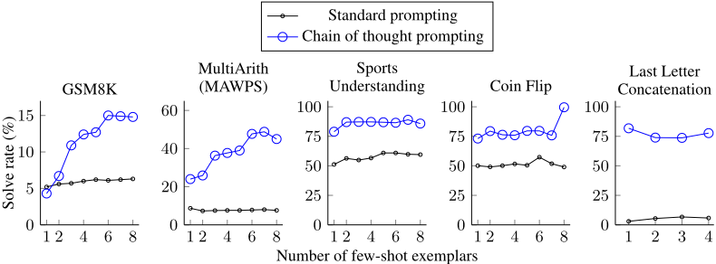
| Dataset | N | Example problem |
|---|---|---|
| GSM8K | 1,319 | Josh decides to try flipping a house. He buys a house for $80,000 and then puts in $50,000 in repairs. This increased the value of the house by 150%. How much profit did he make? |
| SVAMP | 1,000 | Each pack of dvds costs 76 dollars. If there is a discount of 25 dollars on each pack. How much do you have to pay to buy each pack? |
| ASDiv | 2,096 | Ellen has six more balls than Marin. Marin has nine balls. How many balls does Ellen have? |
| AQuA | 254 | A car is being driven, in a straight line and at a uniform speed, towards the base of a vertical tower. The top of the tower is observed from the car and, in the process, it takes 10 minutes for the angle of elevation to change from 45 ◦ to 60 ◦ . After how much more time will this car reach the base of the tower? Answer Choices: (a) 5 √ 3 + 1 (b) 6 √ 3 + √ 2 (c) 7 √ 3 - 1 (d) 8 √ 3 - 2 (e) None of these |
| MAWPS: SingleOp | 562 | If there are 7 bottle caps in a box and Linda puts 7 more bottle caps inside, how many bottle caps are in the box? |
| MAWPS: SingleEq | 508 | Benny bought a soft drink for 2 dollars and 5 candy bars. He spent a total of 27 dollars. How much did each candy bar cost? |
| MAWPS: AddSub | 395 | There were 6 roses in the vase. Mary cut some roses from her flower garden. There are now 16 roses in the vase. How many roses did she cut? |
| MAWPS: MultiArith | 600 | The school cafeteria ordered 42 red apples and 7 green apples for students lunches. But, if only 9 students wanted fruit, how many extra did the cafeteria end up with? |
| Dataset | N | Example problem |
29
V5 → V6。修正了图3中的一处小拼写错误。
V4 → V5。添加了 Codex 和 UL2 的结果。对论文的写作和风格做了小幅修改。
V3 → V4。修正了图3中的一处拼写错误，并添加了若干引用。
V2 → V3。添加了 GPT-3 的结果。为数学任务添加了 SVAMP 和 AQuA 评估数据集。为常识推理添加了 SayCan 评估。添加了扩展相关工作章节（附录C）。添加了常识推理和符号推理的消融实验（表7）。添加了常见问题（FAQ）章节（附录A）。在附录B中添加了原始结果。
V1 → V2。添加了 PaLM 的结果（V1 仅包含 LaMDA）。
由于我们的结果使用了两组未公开提供的大型语言模型，我们采取以下措施以促进可复现性。首先，我们在附录G的表20–表27中提供了所有任务的精确输入提示（并强调我们不进行任何微调，仅对现成的语言模型应用提示）。其次，我们使用公开可用的 GPT-3 API 在四个模型规模（text-ada-001、text-babbage-001、text-curie-001、text-davinci-002）上进行了实验。最后，我们将 LaMDA 137B 在每个任务上的精确输入、目标与预测以 zip 文件的形式在补充材料中提供。
对于我们评估的全部三个语言模型，我们仅进行了基于提示的推理。本文未进行任何微调。在对 LaMDA 137B 进行推理时，我们使用 TPU v3（8x8 配置，64 个芯片 / 128 个核心）；在对 PaLM 540B 进行推理时，我们使用 TPU v4（4x4x12 配置，192 个芯片 / 384 个核心）。GPT-3 实验通过公开 API 完成。5
我们列出本文中使用的所有算术和常识数据集的详细信息与许可证。符号推理数据集为合成创建，如第 4 节所述。
5 https://beta.openai.com/docs/api-reference/making-requests
30
31
表 13：LaMDA 137B 在字母拼接任务上产生的正确与错误的思维链（chain-of-thought, CoT）示例。
问题：取出 'Waldo Schmidt' 中各单词的最后一个字母，并将它们拼接起来。
模型回答（正确）：'Waldo' 的最后一个字母是 'o'。'Schmidt' 的最后一个字母是 't'。将它们拼接起来是 'ot'。所以答案是 ot。✓
问题：取出 'Daniel Friedman' 中各单词的最后一个字母，并将它们拼接起来。
模型回答（错误）：'Daniel' 的最后一个字母是 'l'。'Friedman' 的最后一个字母是 'm'。将它们拼接起来是 'lm'。所以答案是 lm。7
表 14：LaMDA 137B 在抛硬币任务上产生的正确与错误的思维链示例。
问题：一枚硬币正面朝上。Andree 翻转了硬币。Audrie 没有翻转硬币。硬币仍然是正面朝上吗？模型回答（正确）：硬币被 Andree 翻转了。所以硬币被翻转了 1 次，这是一个奇数。硬币开始时正面朝上，所以经过奇数次翻转后，它将会反面朝上。所以答案是否。
✓
问题：一枚硬币正面朝上。Kristian 没有翻转硬币。Dallas 没有翻转硬币。硬币仍然是正面朝上吗？
模型回答（错误）：硬币被 Kristian 翻转了。所以硬币被翻转了 1 次，这是一个奇数。硬币开始时正面朝上，所以经过奇数次翻转后，它将会反面朝上。所以答案是否。7
表 15：LaMDA 137B 在 CSQA 上产生的正确与错误的思维链示例。
问题：当一个人开始工作时，他们正在建立什么？选项：(a) 时间 (b) 完成 (c) 工作 (d) 势头 (e) 疲劳
模型回答（正确）：答案必须是某种能够被建立的东西。在上述选项中，只有势头是能够被建立的。所以答案是 (d)。✓
问题：你最有可能在哪里找到汉堡？选项：(
表 20：数学应用题完整思维链（chain-of-thought，CoT）提示的少样本示例。该组示例用于除 AQuA 以外的所有数学应用题数据集。
问：小树林里有15棵树。小树林的工人今天将在小树林里种树。完成后，将会有21棵树。小树林的工人今天种了多少棵树？
答：原来有15棵树。又种了一些树之后有21棵树。所以一定是 21 - 15 = 6。答案是6。
问：如果停车场里有3辆车，又来了2辆车，停车场里有多少辆车？
答：原来有3辆车。又来了2辆车。3 + 2 = 5。答案是5。
问：Leah有32块巧克力，她姐姐有42块。如果她们吃了35块，她们总共还剩多少块？
答：Leah原来有32块巧克力。她姐姐有42块。所以她们总共有 32 + 42 = 74 块。吃了35块之后，她们有 74 - 35 = 39 块。答案是39。
问：Jason有20根棒棒糖。他给了Denny一些棒棒糖。现在Jason有12根棒棒糖。Jason给了Denny多少根棒棒糖？
答：Jason一开始有20根棒棒糖。给了Denny一些之后他有12根。所以他给了Denny 20 - 12 = 8 根。答案是8。
问：Shawn有五个玩具。圣诞节时，他从妈妈和爸爸那里各得到两个玩具。他现在有多少个玩具？
答：Shawn一开始有5个玩具。如果他从妈妈和爸爸那里各得到2个玩具，那就是多了4个玩具。5 + 4 = 9。答案是9。
问：服务器机房里原来有九台计算机。从周一到周四，每天安装五台计算机。现在服务器机房里有多少台计算机？
答：原来有9台计算机。4天中每天增加5台计算机。所以增加了 5 * 4 = 20 台计算机。9 + 20 是 29。答案是29。
问：Michael有58个高尔夫球。周二，他丢了23个高尔夫球。周三，他又丢了2个。到周三结束时他有多少个高尔夫球？
答：Michael一开始有58个高尔夫球。周二丢了23个之后，他有 58 - 23 = 35 个。再丢2个之后，他有 35 - 2 = 33 个高尔夫球。答案是33。
答：Olivia有23美元。5个贝果每个3美元将是 5 x 3 = 15 美元。所以她还剩 23 - 15 美元。23 - 15 是 8。答案是8。
35
问：John 发现 15 个数的平均值是 40。如果每个数都加上 10，那么这些数的均值是多少？
选项：(a) 50 (b) 45 (c) 65 (d) 78 (e) 64
答：如果每个数都加上 10，那么这些数的均值也会增加 10。所以新的均值是 50。答案是 (a)。
问：如果 a / b = 3/4 且 8a + 5b = 22，求 a 的值。
选项：(a) 1/2 (b) 3/2 (c) 5/2 (d) 4/2 (e) 7/2
答：如果 a / b = 3/4，那么 b = 4a / 3。所以 8a + 5(4a / 3) = 22。化简得 8a + 20a / 3 = 22，即 44a / 3 = 22。所以 a 等于 3/2。答案是 (b)。
问：一个人以 20 km/hr 的速度行进，用 2.5 小时到达了目的地，求距离是多少？
选项：(a) 53 km (b) 55 km (c) 52 km (d) 60 km (e) 50 km
答：这个人行进的路程为 20 km/hr * 2.5 hrs = 50 km。答案是 (e)。
问：输入从 1 到 500 的数字需要多少次按键？
选项：(a) 1156 (b) 1392 (c) 1480 (d) 1562 (e) 1788
答：从 1 到 9 有 9 个一位数。从 10 到 99 有 90 个两位数。从 100 到 500 有 401 个三位数。9 + 90(2) + 401(3) = 1392。答案是 (b)。
表 22：最后一个字母拼接任务的完整思维链提示的少样本示例。
问：取出 "Elon Musk" 中各单词的最后一个字母，并将它们拼接起来。
答："Elon" 的最后一个字母是 "n"。"Musk" 的最后一个字母是 "k"。将它们拼接起来是 "nk"。答案是 nk。
问：取出 "Larry Page" 中各单词的最后一个字母，并将它们拼接起来。
答："Larry" 的最后一个字母是 "y"。"Page" 的最后一个字母是 "e"。将它们拼接起来是 "ye"。答案是 ye。
问：取出 "Sergey Brin" 中各单词的最后一个字母，并将它们拼接起来。
答："Sergey" 的最后一个字母是 "y"。"Brin" 的最后一个字母是 "n"。将它们拼接起来是 "yn"。答案是 yn。
问：取出 "Bill Gates" 中各单词的最后一个字母，并将它们拼接起来。
答："Bill" 的最后一个字母是 "l"。"Gates" 的最后一个字母是 "s"。将它们拼接起来是 "ls"。答案是 ls。
36
表 23：抛硬币（coinflip）任务的完整思维链提示的少样本示例。
问：问：一枚硬币正面朝上。Ka 抛了硬币。Sherrie 抛了硬币。硬币现在还是正面朝上吗？
答：硬币被 Ka 和 Sherrie 抛过。所以硬币被抛了 2 次，这是一个偶数。硬币开始时正面朝上，所以经过偶数次抛掷后，它仍然正面朝上。所以答案为是。
问：一枚硬币正面朝上。Jamey 抛了硬币。Teressa 抛了硬币。硬币现在还是正面朝上吗？
答：硬币被 Jamey 和 Teressa 抛过。所以硬币被抛了 2 次，这是一个偶数。硬币开始时正面朝上，所以经过偶数次抛掷后，它仍然正面朝上。所以答案为是。
问：一枚硬币正面朝上。Maybelle 抛了硬币。Shalonda 没有抛硬币。硬币现在还是正面朝上吗？
答：硬币被 Maybelle 抛过。所以硬币被抛了 1 次，这是一个奇数。硬币开始时正面朝上，所以经过奇数次抛掷后，它会反面朝上。所以答案为否。
问：一枚硬币正面朝上。Millicent 没有抛硬币。Conception 抛了硬币。硬币现在还是正面朝上吗？
答：硬币被 Conception 抛过。所以硬币被抛了 1 次，这是一个奇数。硬币开始时正面朝上，所以经过奇数次抛掷后，它会反面朝上。所以答案为否。
问：一枚硬币正面朝上。Sal 抛了硬币。Raymond 没有抛硬币。硬币现在还是正面朝上吗？
答：硬币被 Sal 抛过。所以硬币被抛了 1 次，这是一个奇数。硬币开始时正面朝上，所以经过奇数次抛掷后，它会反面朝上。所以答案为否。
问：一枚硬币正面朝上。Conception 抛了硬币。Kristian 没有抛硬币。硬币现在还是正面朝上吗？
答：硬币被 Conception 抛过。所以硬币被抛了 1 次，这是一个奇数。硬币开始时正面朝上，所以经过奇数次抛掷后，它会反面朝上。所以答案为否。
问：一枚硬币正面朝上。Inga 没有抛硬币。Elanor 没有抛硬币。硬币现在还是正面朝上吗？
答：没有人抛过硬币。所以硬币被抛了 0 次。硬币开始时正面朝上，且没有被抛过，所以它仍然正面朝上。所以答案为是。
问：一枚硬币正面朝上。Ryan 抛了硬币。Shaunda 抛了硬币。硬币现在还是正面朝上吗？
答：硬币被 Ryan 和 Shaunda 抛过。所以硬币被抛了 2 次，这是一个偶数。硬币开始时正面朝上，所以经过偶数次抛掷后，它仍然正面朝上。所以答案为是。
37
表 24：CSQA 完整思维链提示的少样本示例。答案选项之间存在换行符，出于篇幅原因在表中省略。
问：人们用什么来吸走钢笔里多余的墨水？答案选项：(a) 衬衫口袋 (b) 书法家的手 (c) 墨水池 (d) 书桌抽屉 (e) 吸墨纸
答：答案必须是一件能吸收墨水的物品。在上述选项中，只有吸墨纸是用来吸收墨水的。所以答案是 (e)。
问：什么家庭娱乐设备需要电缆？
答案选项：(a) Radio Shack 商店 (b) 变电站 (c) 电视机 (d) 柜子
答：答案必须需要电缆。在上述选项中，只有电视机需要电缆。所以答案是 (c)。
问：狐狸从城市走进了森林，它在寻找什么？答案选项：(a) 漂亮的花 (b) 鸡舍 (c) 自然栖息地 (d) 故事书
答：答案必须是森林里的东西。在上述选项中，只有自然栖息地在森林里。所以答案是 (b)。
问：Sammy 想去人们所在的地方。他可能会去哪里？答案选项：(a) 人口密集区 (b) 赛道 (c) 沙漠 (d) 公寓 (e) 路障
答：答案必须是有很多人的地方。在上述选项中，只有人口密集区有很多人。所以答案是 (a)。
问：在结账之前，你会把葡萄放在哪里？答案选项：(a) 嘴 (b) 购物车 (c) 超市 (d) 水果篮 (e) 水果市场
答：答案应该是结账前放置食品杂货的地方。在上述选项中，购物车最适于盛放食品杂货。所以答案是 (b)。
问：Google 地图和其他公路与街道 GPS 服务取代了什么？答案选项：(a) 美国 (b) 墨西哥 (c) 乡村 (d) 地图集
答：答案必须是过去曾经做 Google 地图和 GPS 服务所做的事情的东西，也就是指路。在上述选项中，只有地图集是用来指路的。所以答案是 (d)。
问：在离婚之前，那位承担了所有工作的妻子是什么感受？答案选项：(a) 更辛苦 (b) 极度痛苦 (c) 怨恨 (d) 眼泪 (e) 悲伤
答：答案应该是一个正在离婚且承担了所有工作的人的感受。在上述选项中，最接近的感受是怨恨。所以答案是 (c)。
38
问：仓鼠会为某些动物提供食物吗？
答：仓鼠是猎物动物。猎物是捕食者的食物。因此，仓鼠会为某些动物提供食物。所以答案是肯定的。
问：Brooke Shields 能否在宾夕法尼亚大学取得成功？
答：Brooke Shields 就读于普林斯顿大学。普林斯顿大学的学术严格程度与宾夕法尼亚大学大致相当。因此，Brooke Shields 也能在宾夕法尼亚大学取得成功。所以答案是肯定的。
问：是或否：氢的原子序数的平方是否超过辣妹组合（Spice Girls）的人数？
答：氢的原子序数是 1。1 的平方是 1。辣妹组合有 5 名成员。因此，氢的原子序数的平方小于 5。所以答案是否定的。
问：是或否：在某些大学毕业典礼上看到霜是常见的吗？
答：大学毕业典礼可能在 12 月、5 月和 6 月举行。12 月处于冬季，因此可能有霜。因此，在某些毕业典礼上可能会有霜。所以答案是肯定的。
问：是或否：一只美洲驼能否在越南战争（1945-46）期间产崽两次？
答：越南战争持续了 6 个月。美洲驼的妊娠期为 11 个月，超过 6 个月。因此，一只美洲驼不可能在越南战争期间产崽两次。所以答案是否定的。
问：是或否：梨会沉入水中吗？
答：梨的密度约为 0.6 g/cm³，小于水的密度。密度小于水的物体会漂浮。因此，梨会漂浮。所以答案是否定的。
表 26：Date Understanding 完整思维链提示的少样本示例。
问：距离 2015 年还有 36 小时。从今天起一周后的日期是多少（MM/DD/YYYY 格式）？
答：如果距离 2015 年还有 36 小时，那么就是还有 2 天。01/01/2015 往前 2 天是 12/30/2014，所以今天是 12/30/2014。因此从今天起一周后将是 01/05/2015。所以答案是 01/05/2015。
问：2019 年的第一天是星期二，今天是 2019 年的第一个星期一。今天的日期是多少（MM/DD/YYYY 格式）？
答：如果 2019 年的第一天是星期二，那么 01/01/2019 就是星期二。今天是第一个星期一，应该是六天之后。所以今天是 01/07/2019。所以答案是 01/07/2019。
问：音乐会原定于 06/01/1943 举行，但推迟了一天到今天。10 天前的日期是多少（MM/DD/YYYY 格式）？
答：06/01/1943 的后一天是 06/02/1943，所以今天是 06/02/1943。今天往前 10 天是 05/23/1943。所以答案是 05/23/1943。
问：今天是 4/19/1969。24 小时后的日期是多少（MM/DD/YYYY 格式）？
答：今天是 04/19/1969。24 小时后是今天之后一天，即 04/20/1969。所以答案是 04/20/1969。
问：Jane 以为今天是 3/11/2002，但实际上今天是 3 月 12 日，即晚了一天。24 小时后的日期是多少（MM/DD/YYYY 格式）？
答：今天是 03/12/2002。所以 24 小时后的日期将是 03/13/2002。所以答案是 03/13/2002。
问：Jane 出生于 2001 年二月的最后一天。今天是她的 16 岁生日。昨天的日期是多少（MM/DD/YYYY 格式）？
答：二月的最后一天是 28 日，所以 Jane 出生于 02/28/2001。今天是她的 16 岁生日，所以今天是 02/28/2017。所以昨天是 02/27/2017。所以答案是 02/27/2017。
39
表 27：Sports Understanding 完整思维链提示的少样本示例。
问：以下句子是否合理？“Kyle Palmieri 被判挥杆犯规。”
答：Kyle Palmieri 是一名冰球运动员。被判挥杆犯规是冰球运动的一部分。所以答案是肯定的。
问：以下句子是否合理？“Joao Moutinho 在 NFC 冠军赛中接住了掩护传球。”
答：Joao Moutinho 是一名足球运动员。NFC 冠军赛属于美式橄榄球，而不是足球。所以答案是否定的。
问：以下句子是否合理？“Carson Wentz 做了挡拆。”
答：Carson Wentz 是一名美式橄榄球运动员。挡拆是篮球运动的一部分，而不是橄榄球。所以答案是否定的。
问：以下句子是否合理？“Jonas Valanciunas 压哨命中。”
答：Jonas Valanciunas 是一名篮球运动员。压哨命中是篮球运动的一部分。所以答案是肯定的。
问：以下句子是否合理？“Jamel Murray 罚球全中。”
答：Jamal Murray 是一名篮球运动员。罚球全中是篮球运动的一部分。所以答案是肯定的。
问：以下句子是否合理？“Sam Darnold 传出了冰球。”
答：Sam Darnold 是一名美式橄榄球运动员。传冰球是冰球运动的一部分，而不是美式橄榄球。所以答案是否定的。
问：以下句子是否合理？“Draymond Green 传出了达阵球。”
答：Draymond Green 是一名篮球运动员。传出达阵球是橄榄球运动的一部分，而不是篮球。所以答案是否定的。
问：以下句子是否合理？“Malcolm Brogdon 打板投篮命中。”
答：Malcolm Brogdon 是一名篮球运动员。打板投篮命中是篮球运动的一部分。所以答案是肯定的。
表 28：SayCan 机器人规划任务完整思维链提示的少样本示例。
表 29：数学应用题（math word problem, MWP）的完整思维链（chain of thought, CoT）提示少样本示例。这些示例与表 20 中的示例相同，只是思维链由另一位标注者（“标注者 B” 而非 “标注者 A”）撰写。标注者均为共同作者，并且熟悉思维链提示的目标。
问：果园里有 15 棵树。果园工人今天将在果园里种树。等他们完成后，果园里将有 21 棵树。果园工人今天种了多少棵树？
答：现在有 21 棵树，而一开始有 15 棵树，所以工人种了 21 - 15 = 6 棵树。答案是 6。
问：如果停车场里有 3 辆车，又开来 2 辆车，那么停车场里现在有多少辆车？
答：一开始有 3 辆车，又开来 2 辆，所以现在应该有 3 + 2 = 5 辆车。答案是 5。
问：Leah 有 32 块巧克力，她姐姐有 42 块。如果她们吃了 35 块，她们总共还剩多少块？
答：Leah 有 32 块巧克力，她姐姐有 42 块，她们总共有 32 + 42 = 74 块巧克力。她们吃了 35 块之后，现在还剩 74 - 35 = 39 块巧克力。答案是 39。
问：Jason 有 20 根棒棒糖。他给了 Denny 一些棒棒糖。现在 Jason 有 12 根棒棒糖。Jason 给了 Denny 多少根棒棒糖？
答：Jason 一开始有 20 根棒棒糖，但现在他只有 12 根，所以他给了 Denny 20 - 12 = 8 根棒棒糖。答案是 8。
问：Shawn 有五个玩具。圣诞节时，他从妈妈和爸爸那里各得到了两个玩具。他现在有多少个玩具？
答：Shawn 从妈妈和爸爸那里各得到 2 个玩具，所以他多得到了 2 * 2 = 4 个，现在他将有 5 + 4 = 9 个玩具。答案是 9。
问：服务器机房里原来有九台计算机。从周一到周四，每天又安装了五台计算机。现在服务器机房里有多少台计算机？
答：从周一到周四安装了 5 台计算机，所以总共安装了 5 * 4 = 20 台计算机。一开始有 9 台计算机，所以现在有 20 + 9 = 29 台计算机。答案是 29。
问：Michael 有 58 个高尔夫球。周二，他丢了 23 个高尔夫球。周三，他又丢了 2 个。到周三结束时他有多少个高尔夫球？
答：Michael 一开始有 58 个高尔夫球，丢了 23 个，所以他有 58 - 23 = 35 个。他又丢了 2 个之后，现在有 35 - 2 = 33 个球。答案是 33。
答：5 个贝果每个 3 美元，应该花费 5 * 3 = 15 美元。Olivia 一开始有 23 美元，所以现在她还剩 23 - 15 = 8 美元。答案是 8。
42
表 30：数学应用题（math word problem, MWP）的完整思维链（chain of thought, CoT）提示少样本示例。这些示例与表 20 中的示例相同，只是思维链由另一位标注者（“标注者 C” 而非 “标注者 A”）撰写。
问：树林里有 15 棵树。树林工人今天将在树林里种树。等他们完成后，树林里将有 21 棵树。树林工人今天种了多少棵树？
答：我们一开始有 15 棵树。后来有 21 棵树。差值必定就是他们种下的树的数量。所以，他们必定种了 21 - 15 = 6 棵树。答案是 6。
问：如果停车场里有 3 辆车，又开来 2 辆车，停车场里现在有多少辆车？
答：停车场里已经有 3 辆车。又开来 2 辆。现在有 3 + 2 = 5 辆车。答案是 5。
问：Leah 有 32 块巧克力，她的妹妹有 42 块。如果她们吃掉了 35 块，她们总共还剩多少块？
答：Leah 有 32 块巧克力，Leah 的妹妹有 42 块。这意味着原本有 32 + 42 = 74 块巧克力。已经吃掉了 35 块。所以她们总共还有 74 - 35 = 39 块巧克力。答案是 39。
问：Jason 有 20 根棒棒糖。他给了 Denny 一些棒棒糖。现在 Jason 有 12 根棒棒糖。Jason 给了 Denny 多少根棒棒糖？
答：Jason 有 20 根棒棒糖。由于他现在只有 12 根，他必定把其余的都给了 Denny。他给 Denny 的棒棒糖数量必定是 20 - 12 = 8 根。答案是 8。
问：Shawn 有五个玩具。圣诞节时，他从妈妈和爸爸那里各得到了两个玩具。他现在有多少个玩具？
答：他有 5 个玩具。他从妈妈那里得到 2 个，所以之后他有 5 + 2 = 7 个玩具。然后他又从爸爸那里得到 2 个，所以他总共有 7 + 2 = 9 个玩具。答案是 9。
问：服务器机房里原来有九台计算机。从周一到周四，每天安装五台计算机。现在服务器机房里有多少台计算机？
答：从周一到周四共有 4 天。每天增加 5 台计算机。这意味着总共增加了 4 * 5 = 20 台计算机。一开始有 9 台计算机，所以现在有 9 + 20 = 29 台计算机。答案是 29。
问：Michael 有 58 个高尔夫球。周二，他丢了 23 个高尔夫球。周三，他又丢了 2 个。到周三结束时他有多少个高尔夫球？
答：Michael 最初有 58 个球。周二他丢了 23 个，所以之后他有 58 - 23 = 35 个球。周三他又丢了 2 个，所以现在他有 35 - 2 = 33 个球。答案是 33。
答：她以每个 3 美元的价格买了 5 个百吉饼。这意味着她在百吉饼上花费了 5 * 3 = 15 美元。她一开始有 23 美元，所以现在她有 23 - 15 = 8 美元。答案是 8。
43